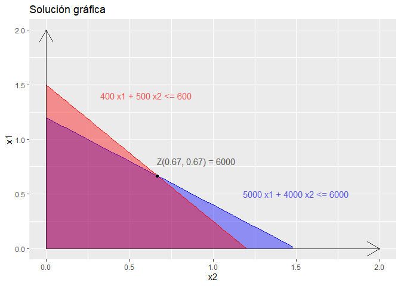

Fundamentos basicos del lenguaje de programación R en el contexto de la catedra Probabilidad y Estadistica
Introducion
El lenguaje de programación R se integra bien con otros lenguajes de programación para realizar tareas de análisis de datos computacionalmente intensivas (alto consumo de recursos como CPU y RAM). Además, puede integrarse con distintas bases de datos y existen bibliotecas que facilitan su utilización desde lenguajes de programación interpretados como Perl y Python.
R es algo más que un lenguaje de programación. El usuario no programa propiamente, sino que utiliza R interactivamente: ensaya, se equivoca y vuelve a probar. Solo cuando termina el ciclo y el resultado es satisfactorio, produce un resultado final que, generalmente, no es un programa, sino un informe.
Caracteristicas
R es un lenguaje de programación interpretado es decir que no se compila para generar un ejecutable, sino que las sentencias son interpretadas y ejecutadas dinámicamente produciendo efectos sobre el ambiente, por ejemplo, creando variables. Estas variables permanecerán disponibles para ser consultadas por la/las próximas sentencias en caso de ser necesario.
R es un leguaje de programación funcional! Es decir, nos provee un montón de herramientas para la creación y manipulación de funciones. Pero en nuestro caso no vamos a necesitar programar nuestras propias funciones ya que R tiene lista una colección de funciones de estadística listas para utilizar 😎 👍
Particularmente nos vamos a centrar en las siguientes:
# Para la manipulación de los datos:
datos <- c(1,2,3,4,5,6) # Creación de vectores o listas (Ojo aca arrancan en 1!)
length(datos) # Cantidad total de datos
min(datos) # Mínimo
max(datos) # Máximo
sum(datos) # Suma del total de los datos
mean(datos) # Media
median(datos) # Mediana
var(datos) # Varianza
sd(datos) # Desvio estandar
cv <- sd(datos)/mean(datos) # Guardamos en la variable cv el Coeficiente de Variación
quantile(datos, c(0.25,0.50,0.75)) # Cuartiles
# Para la creación de gráficos:
hist(datos, ...) # Histograma
boxplot(datos, ...) # Diagrama de caja o Box plot
pie(datos, ...) # Gráfico de torta
# Para lo que quieran investigar un poco mas:
seq(desde, hasta, avance) # Para la creación de secuencias
cut(datos, intervalos) # Armar intervalos
tabla <- data.frame(table(datos)) # Para armar una tabla con la frecuencia de los datos
colnames(tabla)[1] <- "Col1" # Cambiar nombres de las columnas
tabla$DobleDeCol1 <- tabla$Col1*2 # Consultar columnas y hacer operaciones entre las mismas
rev(c(1,2,3,4)) # Invertir un vector, arreglo, lista o columna
# [1] 4 3 2 1
cumsum(c(1,1,1,1)) # Suma acumulada de un vector, arreglo, lista o columna
# [1] 1 2 3 4
help("hist") # Para obtener la documentación oficial de cualquier función!!!
# También recuerden que con print("Hola Mundo!") pueden mostrar en la consola
# Pero si ejecutan el nombre de una variable o función a secas les imprime el contenidoPractiquemos con un ejemplo!
Ejercicio 11
5.11 Para los 88 estudiantes que participaron de una evaluación tomada por un investigador en un colegio se obtuvieron los siguientes puntajes:
84 85 87 72 88 87 86 88 80 82 88 76 75 85 81 93 84 80 83 89 83 88
87 80 80 87 84 83 88 85 98 85 91 83 78 82 85 80 80 92 76 81 75 86
84 82 89 85 88 85 89 83 87 85 85 80 92 86 78 89 88 81 90 85 72 87
80 87 83 89 80 90 90 87 72 87 82 85 78 80 90 77 84 84 89 79 81 85
- Formar la distribución de frecuencias con intervalos de amplitud 5
- Trazar el histograma y el polígono
- Formar la distribución de porcentajes acumulado
- ¿Cuál es el puntaje más típico?
- ¿Cuál es el recorrido de los puntajes?
- ¿Qué porcentaje de estudiantes tuvo un puntaje de menos de 80?
- El 85% de los estudiantes tuvo puntajes menores ¿a qué valor?
- ¿Qué forma tiene la distribución de los datos? Realizar un box plot.
- Calcular las medidas de dispersión que considere apropiadas.
Cargamos y mostramos los datos
Para esto usamos la función c(…)
Combine Values into a Vector or List -> Para mas info help("c")
datos <- c(
84 ,85 ,87 ,72 ,88 ,87 ,86 ,88 ,80 ,82 ,88 ,76 ,75 ,85 ,81 ,93 ,84 ,80 ,83 ,89 ,83 ,88,
87 ,80 ,80 ,87 ,84 ,83 ,88 ,85 ,98 ,85 ,91 ,83 ,78 ,82 ,85 ,80 ,80 ,92 ,76 ,81 ,75 ,86,
84 ,82 ,89 ,85 ,88 ,85 ,89 ,83 ,87 ,85 ,85 ,80 ,92 ,86 ,78 ,89 ,88 ,81 ,90 ,85 ,72 ,87,
80 ,87 ,83 ,89 ,80 ,90 ,90 ,87 ,72 ,87 ,82 ,85 ,78 ,80 ,90 ,77 ,84 ,84 ,89 ,79 ,81 ,85
)
datos## [1] 84 85 87 72 88 87 86 88 80 82 88 76 75 85 81 93 84 80 83 89 83 88 87 80 80
## [26] 87 84 83 88 85 98 85 91 83 78 82 85 80 80 92 76 81 75 86 84 82 89 85 88 85
## [51] 89 83 87 85 85 80 92 86 78 89 88 81 90 85 72 87 80 87 83 89 80 90 90 87 72
## [76] 87 82 85 78 80 90 77 84 84 89 79 81 85Armamos los intervalos y tabla de frecuencias
## [1] 70 75 80 85 90 95 100tabla <- data.frame(table(cut(datos,intervalos, right = FALSE)))
colnames(tabla)[1] <- "Intervals"
tabla ## Intervals Freq
## 1 [70,75) 3
## 2 [75,80) 9
## 3 [80,85) 30
## 4 [85,90) 37
## 5 [90,95) 8
## 6 [95,100) 1Nota:
Con cut(datos, intervalos) obtenemos un vector en donde cada item se corresponde uno a uno con el de los datos originales, solo que en lugar de los valores se encuentra el intervalo al que pertenece. Pueden jugar con el parámetro right pasando TRUE o FALSE acorde a que limite del intervalo (superior o inferior) desean incluir.
Luego con table(...) la tabla de intervalos con sus frecuencias. Para finalmente mediante data.frame(...) poder formar las columnas con su respectivo nombre y guardarlas en la variable tabla. Esta variable es de tipo dataframe, lu cual nos permitira recuperar las columnas con $ y hacer operaciones entre las mismas.
Para mas info: help("cut") help("table") help("data.frame")
Histograma y Polígono de frecuencias
Desafortunadamente en los histogramas de R no hay una forma sencilla de incluir el polígono de frecuencias nuestro gráfico. Sin embargo, podemos usar la función lines(coordsX, coordsY) para dibujar líneas entre el conjunto de puntos que pasamos por parámetro. Mediante esta mecánica logramos dibujar el polígono utilizando los valores medios de las barras del histograma, los cuales los recuperamos con histograma$mids. Con histograma$counts recuperamos las frecuencias.
histograma <- hist(datos, # Paso los datos originales
breaks = intervalos, # Vector con limites de intervalos
xlim = c(65,105), # Limites eje X
xlab = "Puntajes", # Titulo de eje X
ylab = "Frecuencia", # Titulo de eje Y
main = "Histograma de puntajes") # Titulo del Grafico
# Nota: el unico parametro obligatorio son los datos -> hist(datos) Funciona!
# El param breaks me da control sobre como se arman las barras
lines( c(67.5,c(histograma$mids),102.5) , c(0,c(histograma$counts),0) )
Hasta el momento llegue hasta aca!!!
Todavia me queda por armar las celdas y explicar este codigo ↓↓↓
tabla$Freq
tabla$FrecRel <- tabla$Freq/sum(tabla$Freq)
tabla$RelPor <- tabla$FrecRel*100
tabla$PorAcu <- cumsum(tabla$RelPor)
tabla$PorDes <- rev(cumsum(rev(tabla$RelPor)))
rev(c(1,2,3,4))
cumsum(c(1,1,1,1))
pie(tabla$Freq, labels = tabla$Intervals, main = "Grafico de Frecuencias por intervalos")
quantile(datos, c(0.85))
summary(datos)
box <- boxplot(datos, horizontal = TRUE)
min(datos)
max(datos)
mean(datos)
median(datos)
var(datos)
sd(datos)
quantile(datos, c(0.25,0.50,0.75))
cv <- sd(datos)/mean(datos)
cv*100
write.csv(tabla,"ej11.csv")
pie(tabla$Freq, labels = tabla$Intervals)
pie(datos)